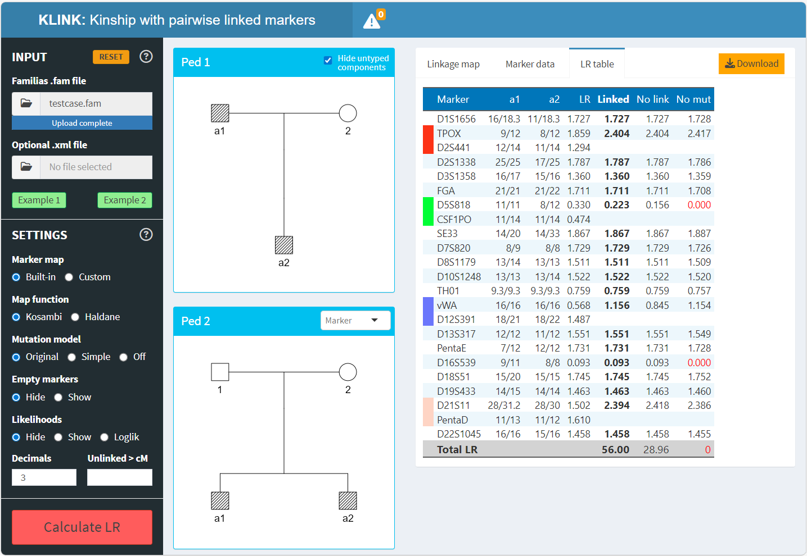

KLINK: Kinship testing with pairwise linked markers
klink.Rmd
What is KLINK?
KLINK is a free, user-friendly app extending the Familias software for kinship calculations in forensic genetics. Unlike Familias, KLINK has the ability to model linkage between markers. This is increasingly important in modern forensic kinship testing, which often involves combinations of multiple STR kits to increase statistical power.
A paper describing KLINK in detail is available here: KLINK: A program for kinship testing with pairwise linked STR markers (Vigeland and Gilfillan, 2026).
While KLINK has substantial overlap with the Familias companion FamLink, it offers several unique features:
- advanced mutation modelling
- visualisations of pedigrees and marker maps
- platform independent (not only Windows)
- ready-to-use output reports in Excel format
It should be noted that KLINK currently only models pairwise linkage. If more than two markers are on the same chromosome, the program groups them into pairs (always choosing the closest ones) but ignores linkage between different pairs. As shown in the paper, this procedure gives robust LR calculations in typical applications combining several STR kits. when the number of markers is not too high. For general linkage, e.g. with dense SNPs, we recommend FamLink.
Running KLINK
KLINK is available both as an online app (see link above) and as an R package. The latter is important if you have sensitive data and want to do the analysis locally/offline. To set this up, install it in R with
install.packages("KLINK")The following command then opens the KLINK program:
KLINK::launchApp()Linkage Lab
The Linkage Lab is a companion app to KLINK, which allows you to explore the effects of linkage on kinship calculations. It is freely available online here: https://magnusdv.shinyapps.io/linkagelab.